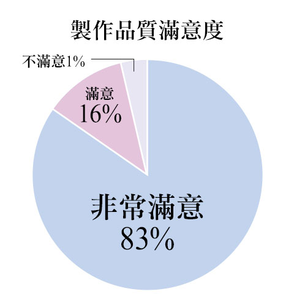
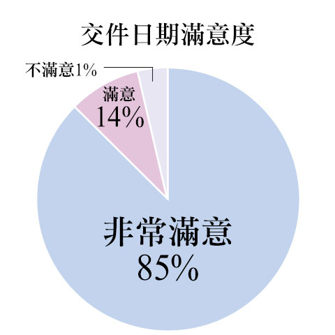

作詞、作曲
編曲
NoSignal Studio
服務
arrow_drop_down
了解更多
相簿
詢問我們
服務
選單
編曲
關於編曲的委託
album
滿足各種需求的編曲委託
．為旗下歌手打造高品質的編曲
．為自己創作的歌曲編曲
．將目前既有歌曲重新編曲
．將哼唱創作的旋律譜成樂曲
．為樂團或個人製作的試聽帶加上弦樂器或銅管樂器的編曲
．將搖滾歌曲改編成抒情或其他類型的音樂
．以吹奏樂編曲
．以管弦樂編曲
．為音樂劇編曲
．為甄選或比稿用的音樂編曲
編曲的重要性
編曲是音樂製作上非常重要的一環，透過樂曲(旋律)的架構、樂器編制、搭配和弦進程(Harmonize)、各樂器的音訊設計與整體音訊平衡的架構等，能左右樂曲最終的質感。讓歌曲的潛能發揮到極致，將旋律襯托得豐富鮮活，也是編曲家的工作。有時甚至能起到宛如魔法的作用，將歌曲的質感提升到另一個層次。
顧客滿意度99%
 
聯絡我們
phone
0925238071
email
signalstudiojp@gmail.com